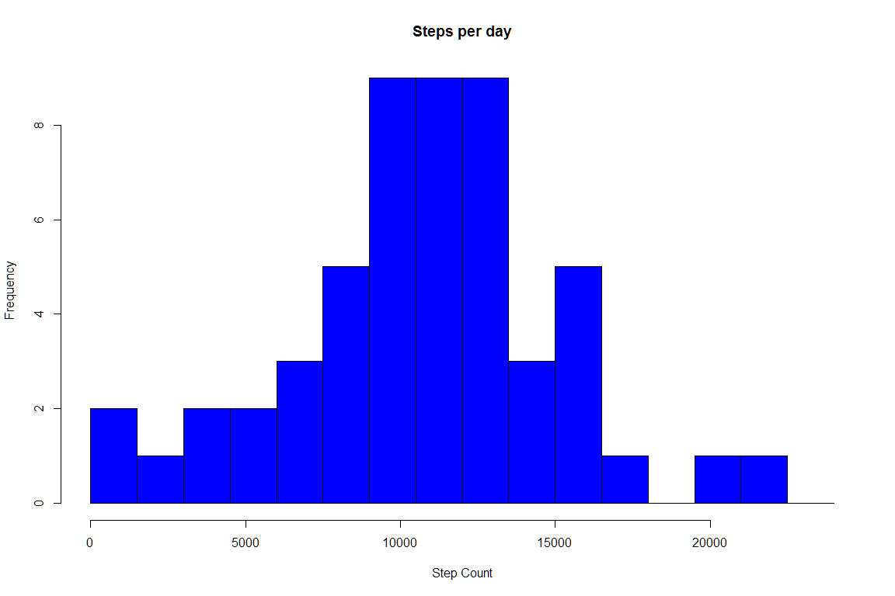
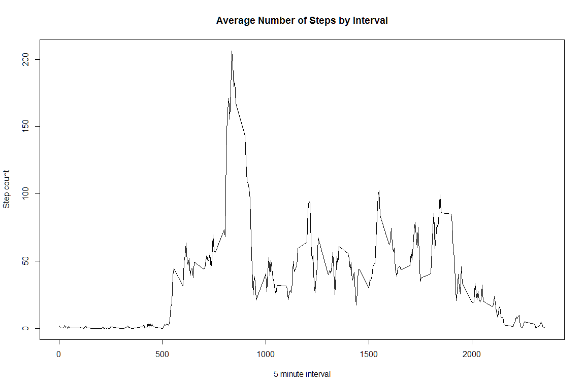
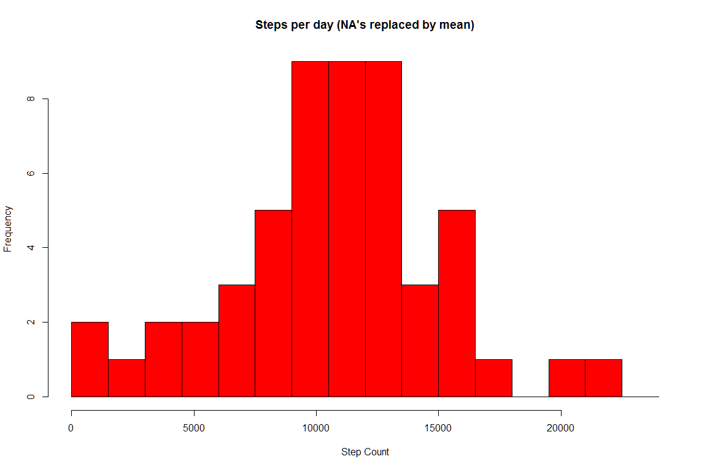
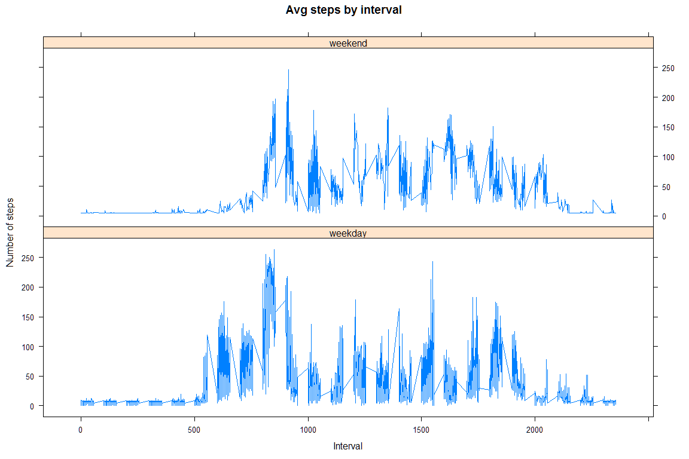

Calculate the total number of steps taken per day
Make a histogram of the total number of steps taken each day 
Calculate and report the mean and median of the total number of steps taken per day
meanSteps <- mean(dailySteps$steps)
medianSteps <- median(dailySteps$steps)# Calculate average steps for each of 5-minute interval during a 24-hour period
stepsInterval <- aggregate(steps ~ interval, activityData, mean)
plot(stepsInterval$interval,stepsInterval$steps, type="l", xlab="5 minute interval", ylab="Step count",main="Average Number of Steps by Interval")
maxInterval <- stepsInterval[which.max(stepsInterval$steps),1]The interval with the max number of steps across all days is 835
NAs <- sum(is.na(activityData$steps))The total number of missing values is 2304
# I will be simply finding the averages to fill in the missing values
# Need to first identify where the na's are.
na_idx <- which(is.na(activityData$steps))
# Now get the means where the indexes (not yet replacing)
meanOfTheIndexes <- rep(mean(activityData$steps, na.rm=TRUE), times=length(na_idx))# For comparison sake showing the data prior to replacement of the NA's
head(activityData)## date weekday daytype interval steps
## 1 2012-10-01 monday weekday 0 NA
## 2 2012-10-01 monday weekday 5 NA
## 3 2012-10-01 monday weekday 10 NA
## 4 2012-10-01 monday weekday 15 NA
## 5 2012-10-01 monday weekday 20 NA
## 6 2012-10-01 monday weekday 25 NA# Now we replace the empty values of steps using the index as a locator and apply with the mean indexes
activityData[na_idx, "steps"] <- meanOfTheIndexes# Showing the activity data after replacement
head(activityData)## date weekday daytype interval steps
## 1 2012-10-01 monday weekday 0 37.3826
## 2 2012-10-01 monday weekday 5 37.3826
## 3 2012-10-01 monday weekday 10 37.3826
## 4 2012-10-01 monday weekday 15 37.3826
## 5 2012-10-01 monday weekday 20 37.3826
## 6 2012-10-01 monday weekday 25 37.3826hist(dailySteps$steps, breaks=seq(from=0, to=25000, by=1500), main = paste("Steps per day (NA's replaced by mean)"), col="red", xlab="Step Count")
What is the impact of imputing missing data on the estimates of the total daily number of steps?
meanSteps <- mean(dailySteps$steps)
medianSteps <- median(dailySteps$steps)Median: 10765
Do these values differ from the estimates from the first part of the assignment? ** Really no difference since we used the mean. It just averaged out.
library(lattice)
mean_data <- aggregate(activityData$steps, by=list(activityData$daytype, activityData$weekday, activityData$interval), mean)
# Rename the attributes
names(mean_data) <- c("daytype", "weekday", "interval", "mean")
xyplot(mean ~ interval | daytype, mean_data,
type="l", layout=c(1,2), lwd=1,
main = "Avg steps by interval", xlab="Interval", ylab="Number of steps")
# It appears that during the weekend the steps ramp up earlier in the day.